Geospatial Analysis
Basic raster operations
Helena Mitasova
Learning objectives
- Explain global and zonal statistics
- Define neighborhood operations
- Understand raster map algebra
- expressions, operators, functions and variables
- basic calculations, integer and floating point data
- "if" conditions, handling NULLs and creating masks
- Define raster mosaicking and patching
- Explain raster map reclassification and rescaling
Summary statistics: continuous data
- stored numbers are values quantifying the phenomenon
- univariate statistics: min, max, mean, standard deviation, median, ...
- histogram (requires discretization into bins)
Can be applied as global, zonal, or focal operations
See relevant equations and additional metrics in
Supplemental material
Summary statistics: discrete data
- stored numbers can be values (quantitative data) or category numbers (qualitative data)
- values apply to an area rather than grid point
- univariate statistics can be applied only to quantitative attributes
- majority (mode or most frequent category), diversity (number of different categories) apply to category data
Can be applied as global, zonal, or focal operations
See relevant equations and additional metrics in
Supplemental material
Global statistics
Continuous data example
- Compare elevation data from different sources using mean, standard deviation and histogram
- Identify data anomalies and potential artifacts
Global statistics: compare DEMs


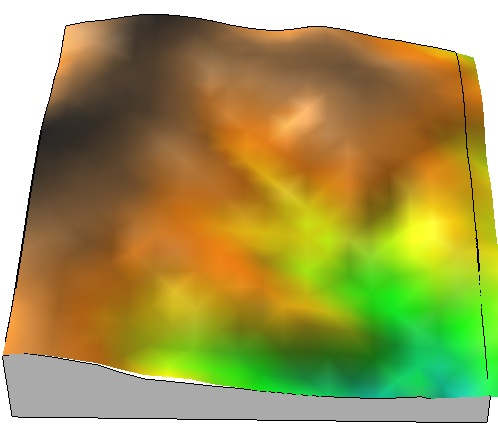
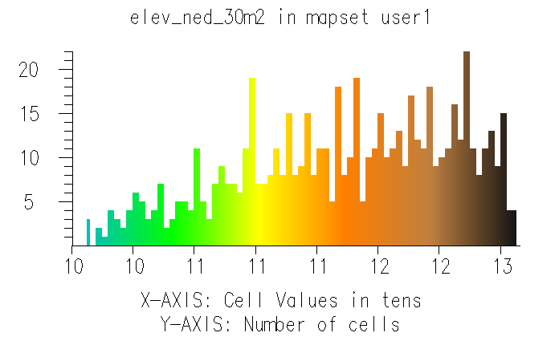
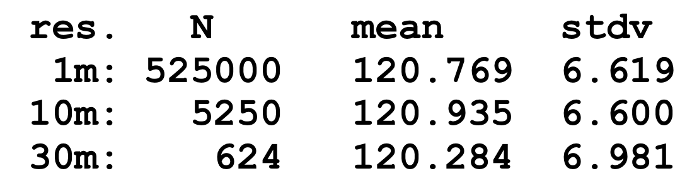
Global statistics: compare DEMs
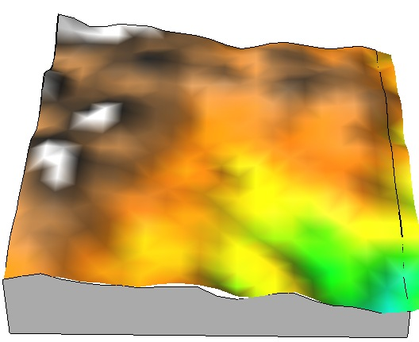
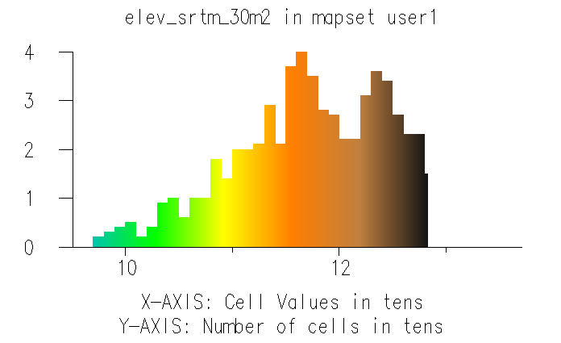
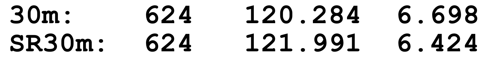
Global statistics: compare DEMs

Global statistics: discrete soil data
Soil properties: soil erodibility mean 0.248
Soil type ID: majority (most common soil type)


Zonal statistics: continuous data
- Agregates continous data to discrete areas
- Hydrology example: mean slope for watersheds to estimate how fast water moves through it


Watersheds (discrete zones), Slope (continuous variable): Mean slope for each watershed
Zonal statistics: category data
- Agregates discrete data to discrete areas
- Land use analysis example: map prevailing land cover for each zipcode
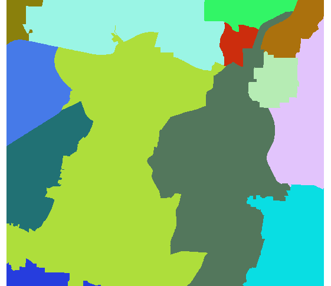
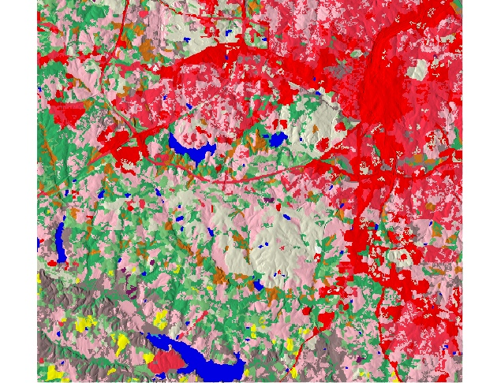
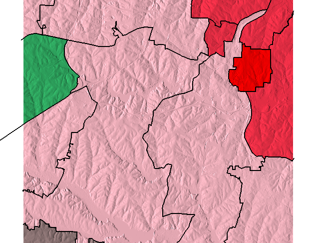
Zipcodes (discrete zones), Land cover 1996 (discrete variable): Most common land cover
HI developed, LI developed, Southern pine, Hardwoods, Cultivated Herbaceous
Neighborhood operations
- Value at a grid cell is function of the values at neighboring grid cells
- Grid cell neighborhood is defined by a moving window, square or circular
- Same rules apply for continuous and discrete data as for global and zonal stats
- Basic univariate statistics, filters, image processing
Neighborhood operations: smoothing
Smoothing noise in DEM: focal mean with 5x5 window
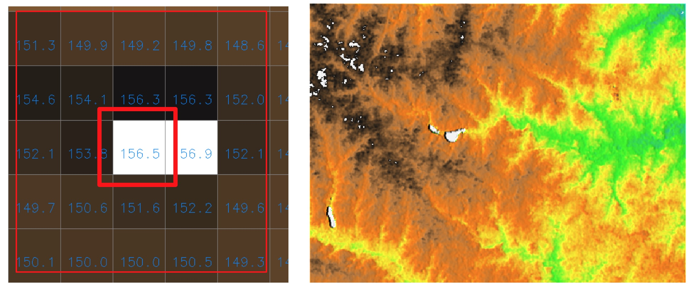
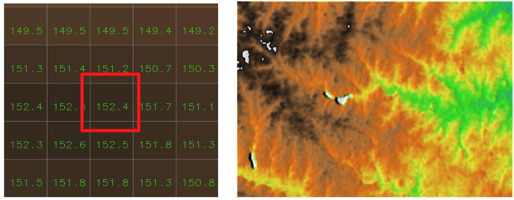
Neighborhood operations: diversity
Number of different LU classes in 7x7 window
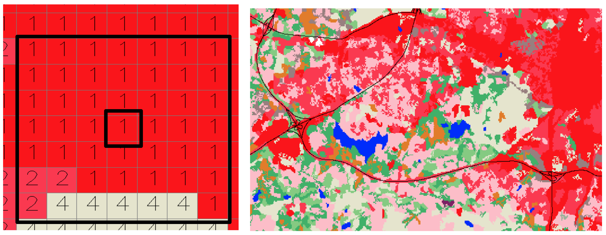
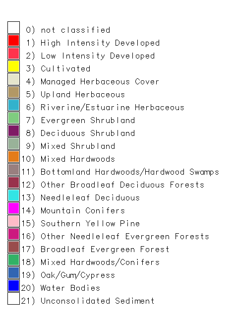
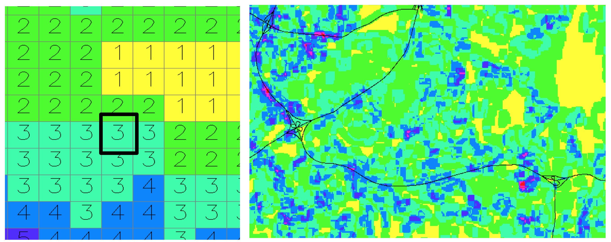
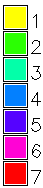
Raster map algebra
Computes a new raster map using an expression built by applying logical and/or arithmetic operators,
or mathematical functions to existing raster maps:
newmap = expression (map1, map2, ...map3)
Local operation: Expression is applied on per-cell basis
Raster map algebra
Each software has its own syntax, operators and functions
Map algebra: logical expressions
- continuous and discrete (category) data and their combination
- reclassification, sub-setting, masking, overlays
- Example: find all forested areas with elevation > 120m
GRASS GIS expression
"highforest = if(landclass96==5 && elevation > 120., elevation, null())”
Map algebra: logical expressions
"highforest = if(landclass96==5 && elevation > 120., elevation, null())”
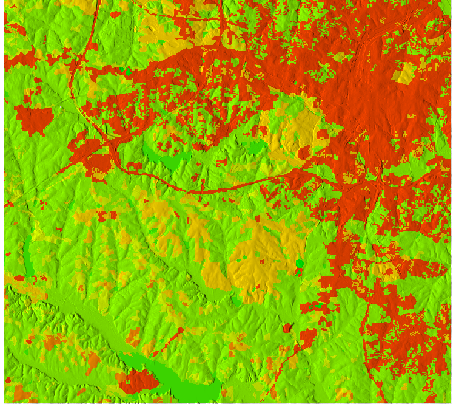
 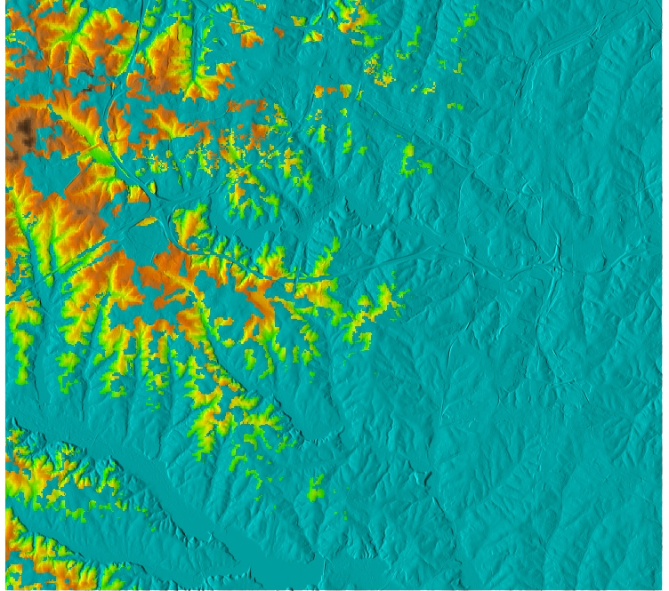
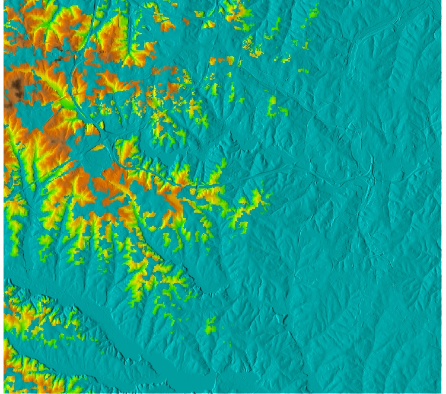
How will the map look like if we use OR (||) instead of AND (&&) ?
Map algebra: arithmetic operators
Integer and floating point matters for arithmetic expressions:
- F(map1_int, map2_int) -> map_int
- F(map1_int, map2_fp) -> map_fp
- Example: compute ndvi index from Landsat integer maps
- ndvi=(tm4-tm3)/(tm4+tm3)
- ndvi=float(tm4-tm3)/float(tm4+tm3)
- ndvi=1.*(tm4-tm3)/(tm4+tm3)
Raster map algebra: int and fp
ndvi=(tm4-tm3)/(tm4+tm3)
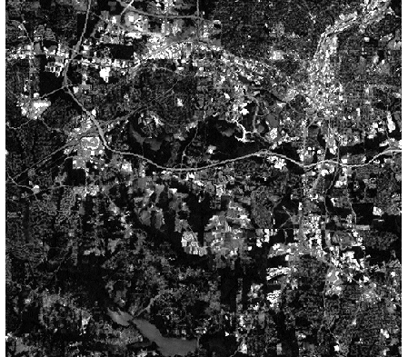
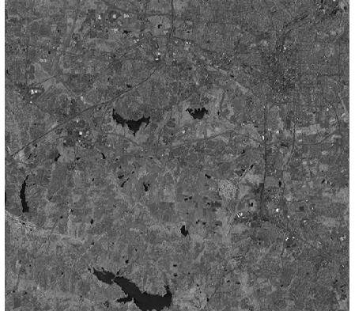
Raster map algebra: int and fp
ndvi=float(tm4-tm3)/float(tm4+tm3)
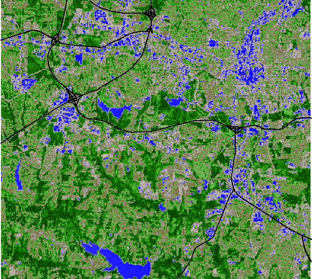
Raster map algebra: math functions
Example: for all forested areas, compute sediment transport capacity using the following equation
equations
GRASS GIS expression
"sediment = if(landclass96==5, exp(contrib_area,1.5) * sin(slope), null())”
Map algebra: math functions
Generate new surfaces:
$z = x + y + 100$
plane = row() + col() + 98
 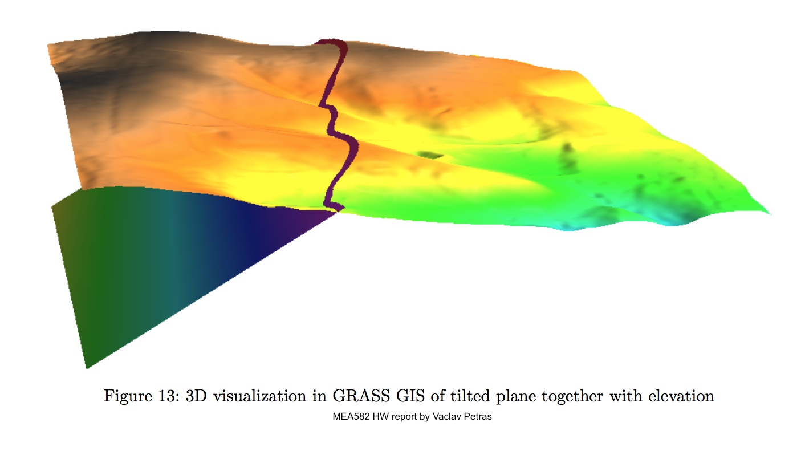
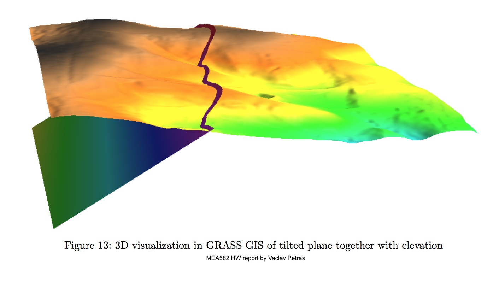
Tilted plane
Map algebra: math functions
Generate new surfaces:
$z = \sin (0.4x) + 0.3 \cos(y) + 80$
 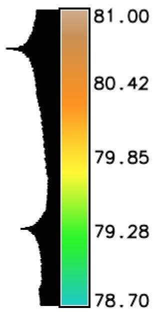
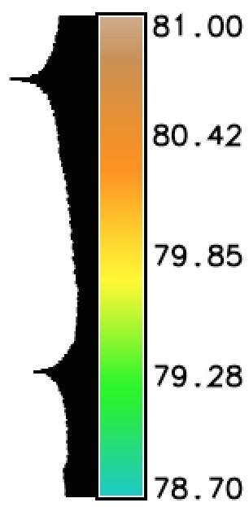
Smooth, simplified surface
Raster map algebra: null data
- Raster maps can include NULL data (no-data), each software has its own rules how to handle them in map algebra operations
- General rule: If a cell is null in at least one map (variable) then it is null in the resulting map
- "If “ statements can test for null and/or assign a cell null value based on the if condition
- Special operators can be implemented to extend the rules applied to nulls
Example: null data handling
Compute average elevation from 30m SRTM and one tile of 6m NCFlood DEM,
elev_avg=(elev_srtm_30m+elevlid_D782_6m)/2.
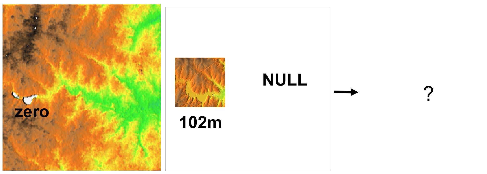
Example: null data handling
Compute average elevation from 30m SRTM and one tile of 6m NCFlood DEM,
elev_avg=(elev_srtm_30m+elevlid_D782_6m)/2.
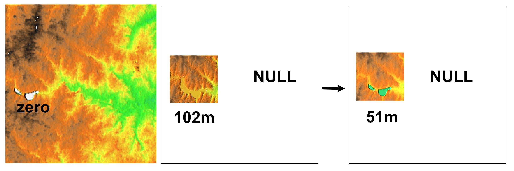
Use “if” statement to limit the computation to no-NULL areas
Patching and Mosaicking
- Merging several neighboring raster maps into a single raster
- “Filling-in” nulls in base raster map with values from additional raster maps
- Order of maps matters for patching
- Issues: resolution, extension that is not aligned, no-data slivers due to projection
Mosaicking
Merging several neighboring raster maps into a single raster (mosaic)
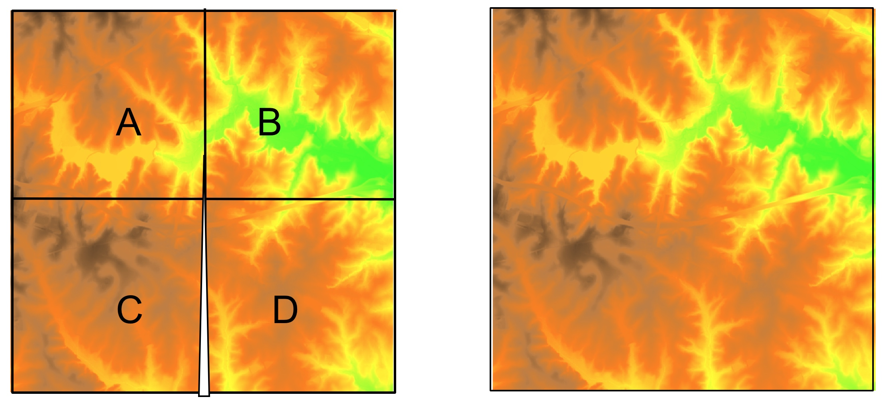
First mosaic, then reproject to avoid potential slivers that need to be interpolated
Reclassification
Reclassification / recoding: transformation rules used to convert between raster value types and classes:
change interval or list of values $(w_i, w_j)$ to a new value $v_k$ or interval of values $(v_k,v_l)$
Interval:
- Equal value
- Natural breaks (based on histogram breaks)
- Equal area (histogram equalized)
Reclassification example
Aspect: continuous values in degrees to discrete classes in cardinal directions
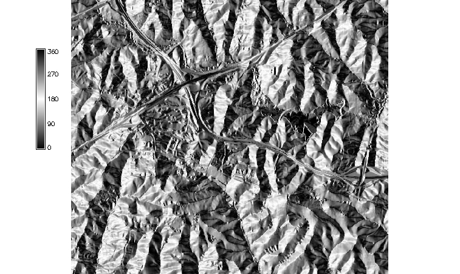
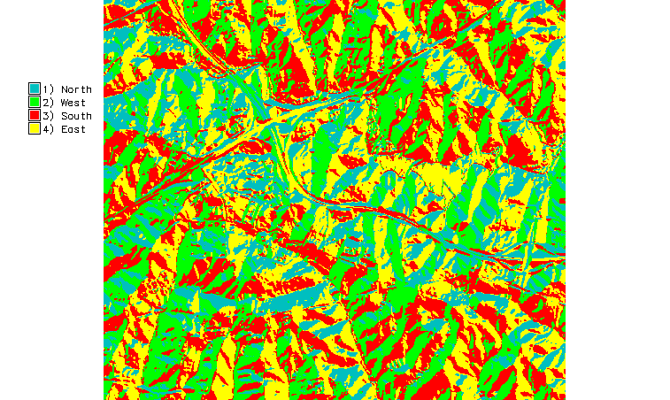
0- 45 = 4 East, 45-135 = 1 North, 135-225 = 2 West, 225-315 = 3 South, 315-360 = 4 East,
Summary
- global and zonal statistics
- neighborhood operations
- map algebra